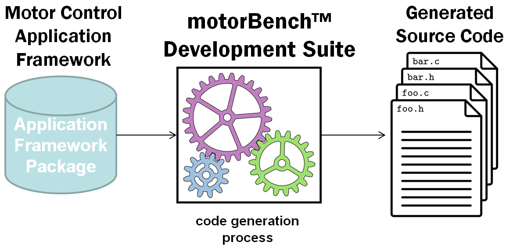

1. 简介¶
电机控制应用框架（简称 MCAF）是 Microchip 面向 dsPIC® DSC 器件的下一代电机控制应用固件。它与此前发布的应用笔记（如 AN1078 与 AN1292）存在若干重要差异，最显著之处在于 MCAF 与 motorBench® Development Suite相集成。

本质上， 固件包 随 motorBench® Development Suite 一起提供，其中包含 电机控制应用框架。该包包含若干文件，用于将代码生成到任意目标 MPLAB® X 项目。可以把它想象成一个电机控制代码工厂，或者一份“预制餐”——只是对象是固件代码而非晚餐——其中既包含配方也包含配料。应用框架被“渲染”为一份具体的应用源代码实例，这一过程由 motorBench® Development Suite 根据配置信息、自动化的电机参数测量，以及由此得到的用于整定电机控制环路的计算结果来完成。
这种方式带来两大优势：
管理多种硬件配置 ——通过代码生成，MCAF 能够用单一的固件包支持处理器、开发板、 PIM、电机和负载的多种组合。
自动化整定流程 —— motorBench® Development Suite 包含的算法可自动整定电流和速度控制器。
此外，Microchip 在代码质量方面做了许多改进，使固件更具可读性、更加模块化，并降低了将本固件应用于客户产品的门槛。希望这些改进能助力您的下一个电机控制项目。